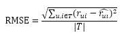
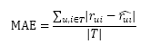
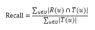
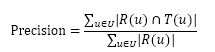
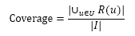
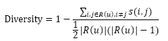
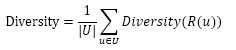

a. 推荐系统涉及到三方利益：用户、物品提供者、推荐系统。
b. 好的推荐系统不仅仅能够准确预测用户的行为，而且能够扩展用户的视野，帮助用户发现那些他们可能会感兴趣，但却不那么容易发现的东西，即长尾商品。
c. 为了全面测评推荐系统对三方利益的影响，测评指标将会有：准确度、覆盖度、新颖度、惊喜度、信任度、透明度等。这些指标中，有些可以离线计算，有些只有在线才能计算，有些只能通过用户问卷获得。
1. 推荐系统的实验方法
一个新算法的最终上线，需要完成3个实验：
a. 通过离线实验证明它在很多离线指标上优于现有的算法
b. 通过用户调查证明它的用户满意度不低于现有的算法
c. 通过在线的AB测试确定它在我们关心的指标上优于现有算法
(1) 离线实验
步骤：
a. 通过日志系统获得用户行为数据，并按照一定格式生成一个标准的数据集
b. 将数据集按照一定的额规则分成训练集和测试集
c. 在训练集上训练用户兴趣模型，在测试集上进行测试
d. 通过事先定义的离线指标评测算法在测试集上的预测结果
优缺点：
a. 都是在数据集上完成的，不需要一个实际的系统来供它实验，而只要有一个从实际系统日志中提取的数据集即可
b. 无法获得很多商业上关注的指标，如点击率、转化率等
(2) 用户调查
离线实验的指标和实际的商业指标存在差距，比如预测准确率和用户满意度之间就存在很大差距，高预测准确率不等于高用户满意度。因此，如果要准确测评一个算法，需要对比真是的环境，最好的方法就是将算法直接上线测试，上线测试之前先要做好用户调查，尽量降低风险。
(3) 在线实验
完成离线实验和必要的用户调查后，可以将推荐系统上线做AB测试。
优缺点：
a. 可以公平获得不同算法实际在线时的性能指标，包括商业上关注的指标。
b. 缺点是周期比较长，必须进行长期的实验才能得到可靠的结果。（因此一般只用它来测试在离线实验和用户调查中表现比较好的算法。
注意：
AB测试中应该注意分层测试，不同层之间有可能会相互影响，此时就应在AB测试时进行切分流量。
具体：用户进入网站后会被预先定制的规则打上标签，确定用户是属于哪种AB测试的；在后台，实验人员的工作首先是配置流量分配系统，决定满足什么条件的用户参加什么样的测试。
2. 测评指标
(1) 用户满意度
（用户调查、在线实验）
用户调查：不是简单地询问用户对结果是否满意，而是从不同的侧面询问用户对结果的不同感受。
在线实验：主要通过一些对用户行为的统计得到。
(2) 预测准确度
（离线实验）
离线实验：计算该指标时需要有一个离线数据集，其包含用户的历史行为记录，然后将该数据集分为训练集和测试集。在训练集上建立用户的行为和兴趣模型预测用户在测试集上的行为，并计算预测行为和测试集上实际行为的重合度作为预测准确度。
例子1：评分预测
a. 定义：预测用户对物品会评多少分的行为
b. 评分预测的预测准确度一般通过均方根误差（RMSE）和平均绝对误差（MAE）计算
c. 均方根误差RMSE：

平均绝对误差MAE：

对于测试集中的一个用户u和物品i，令rui是用户u对物品i的实际评分，r^ui而是推荐算法给出的预测评分。
d. RMSE和MAE的优缺点：
RMSE加大了对预测不准的用户物品评分的乘法（平方项的惩罚），因而对系统的评测更加苛刻。
研究表明，如果评分系统是基于整数建立的（即用户的评分都是整数），那么对预测结果取整会降低MAE的误差。
例子2：topN推荐
a. 定义：网站在提供推荐服务时给用户一个个性化的推荐列表
b. TopN推荐的预测准确率一般通过准确率/召回率度量
c. 召回率：

准确率：

令R(u)是根据用户在训练集上的行为给用户作出的推荐列表，而T(u)是用户在测试集上的行为列表。
(3) 覆盖率
描述一个推荐系统对物品长尾的发掘能力（这是一个内容提供商会关心的指标）。有不同的定义方法。
最简单的定义为：推荐系统能够推荐出来的物品占总物品集合的比例。

令用户集合为U，推荐系统给每个用户推荐的一个长度为N的物品列表R(u)。
缺点：只是总体上讨论了覆盖程度，但缺乏更细致的长尾发掘能力。
改进型定义：在计算覆盖率时要统计推荐列表中不同物品出现次数的分布。（消除马太效应）
例子：信息论中信息熵的定义、经济学中基尼系数的定义。
(4) 多样性
描述推荐列表中物品两两之间的不相似性。因此与相似性是相对的。
定义：

s(i,j)∈[0,1]定义了物品i和j之间的相似度，R(u)为推荐列表。
推荐系统的整体多样性可以定义为所有用户推荐列表多样性的平均值：

(5) 新颖性
给用户推荐那些他们以前没有听说过的物品。
最简单的方法就是把那些用户之前在网站中有过行为的物品过滤掉。
当前业界挑战：如何在不牺牲精度的情况下提高多样性和新颖性？
(6) 惊喜度
如果推荐结果和用户的历史兴趣不相似，但却让用户觉得满意，那么就可以说推荐结果的惊喜度很高。
要区分新颖性和精细度的区别，不能单纯从中文字面意义来区分。
(7) 信任度
让用户对推荐结果产生信任。
方式：
a. 增加推荐系统的透明度
b. 考虑用户的社交网络信息
(8) 实时性
a. 推荐系统需要实时地更新推荐列表来满足用户新的行为变化
b. 推荐系统需要能够将新加入系统的物品推荐给用户
(9) 健壮性
一个推荐系统抗击作弊的能力。（例如：行为注入攻击，即制造众多用户行为去让自己的物品获得高排位）
健壮性的测试主要运用：模拟攻击。
提高健壮性的方法：
a. 设计推荐系统时尽量使用代价比较高的用户行为，例如在选择浏览行为还是购买行为的问题上选择购买行为。
b. 在使用数据前，进行攻击检测，从而对数据进行清理。
(10) 商业目标
推荐系统的测评也看中网站的商业目标是否达成。
3. 评测维度
一个算法在虽然可能在某个方面性能不好，但在其他特定方面可能会有不错的性能。评测维度就是要知道一个算法在什么情况下性能最好。
评测维度有3种：
a. 用户维度：人口统计学信息、活跃度、是不是新用户等
b. 物品维度：物品的属性信息、流行度、平均分记忆是不是新加入的物品等
c. 时间维度：季节、是工作日还是周末，是白天还是晚上等